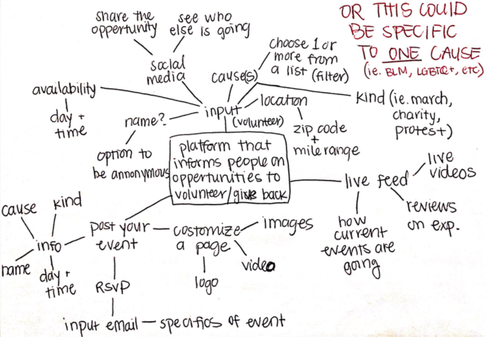

Firstly, I read through all of our class' brainstorming points. There were plenty of great ideas considering there are plently of areas for improvment in our society. I write down the top 8 ideas that stood out to me, each having to do with different areas of social justice and personal improvement. After reading these 8 topics through, I saw an oppertunity to combine 2 of the topics and decided that this was the idea I would look further into.
I like doing the webs tyle brainstorms so I places my main topic in the center and began brainstorming. The first thing that came to mind was what kind of information a potential volunteer would have to input to see the volunteer oppertunities for them. Some of this information would be part of their registration process and others could be pieces of information that they would supply to filter through the possible oppertunities. One cool idea that I am considering is attaching your social media to your account so that you can see "friends" that are also going to certain volunteer oppertunities. Additionally, you can post about the volunteering oppertunities on your social media, directly through this site. On the other hand, I brainstormed how people or groups would post their event that they need volunteers for. They would need to supply information like the cause, the date and time, the kind of help they are looking for and more. Also, I thought that each of these events could costumize their own page with logos, images and videos that represent their group. Another cool feature I thought of was a kind of live feed or stream where people could post live updates about their volunteer experiences.